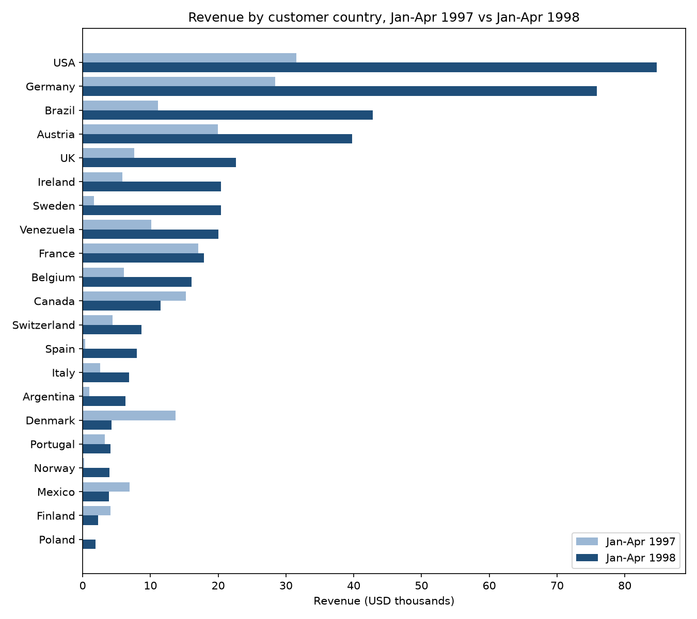
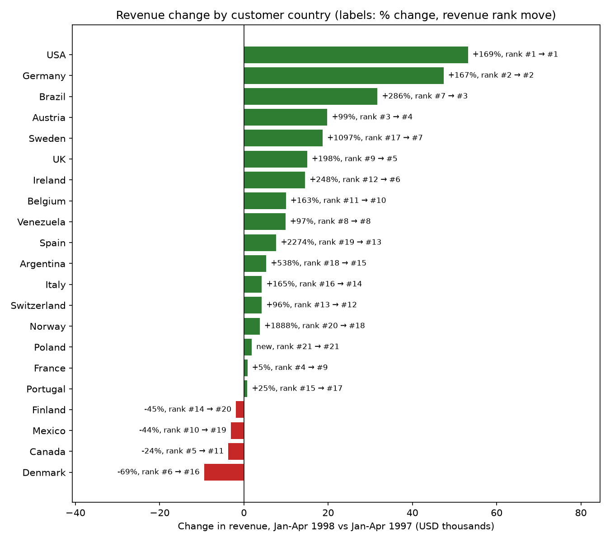
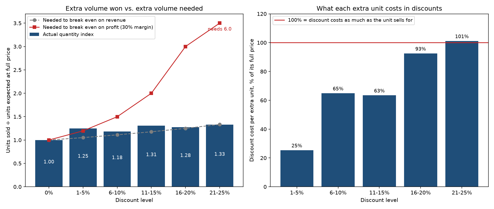
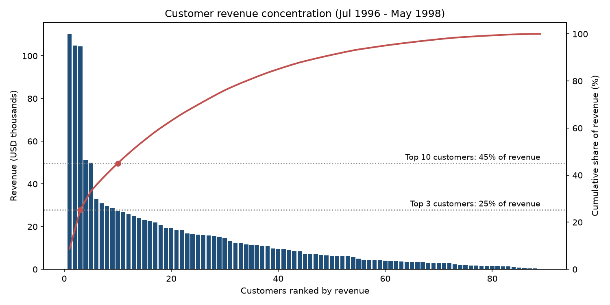

Northwind Business Analysis
Three questions for the manager of Northwind Traders, a food distributor. Data: 830 orders, 89 customers, Jul 1996 – May 1998, $1.27M total revenue. Code: GitHub repository.
Q1. Which country markets are growing or declining, and where should sales attention go?
Why it matters
Sales staff and budget are limited. Knowing which markets are speeding up or shrinking tells the manager where to invest and where to step in.
Approach
The data covers orders from 4 Jul 1996 to 6 May 1998. Only 1997 is a complete year: 1996 starts in July and 1998 stops after four months. Jan–Apr is the only full period present in both 1997 and 1998, so the analysis compares revenue by customer country for Jan–Apr 1997 against Jan–Apr 1998. Comparing like-for-like months also avoids seasonal effects.
The first chart shows the size of each market in both periods. The second ranks every market by its dollar change, from biggest gain to biggest loss, and labels each with its % change and how its revenue rank moved. Sorting by change, instead of scanning the bars by eye, separates growing and shrinking markets systematically. When there are more than 30 markets, the chart shows only the 15 biggest gainers and the 15 biggest decliners, so it still works with 200 countries.


Finding
Company revenue grew 121% ($191K → $422K). Three markets account for 57% of that growth: the USA (+$53K), Germany (+$47K) and Brazil (+$32K, up from rank #7 to #3). Sweden (#17 → #7), Ireland (#12 → #6) and the UK (#9 → #5) also climbed fast. Four markets shrank while the company more than doubled: Denmark (−69%, #6 → #16), Mexico (−44%, #10 → #19), Finland (−45%) and Canada (−24%, #5 → #11). France grew only 5% and fell from #4 to #9: its revenue didn't shrink, but it is losing ground relative to the rest of the business.
Business implication
Protect and expand the USA, Germany and Brazil, where the growth is. Run account reviews in Denmark, Canada, Mexico and France to find out why they lag a fast-growing business, for example a lost customer or a competitor.
Q2. Do discounts lead to larger orders, and is deep discounting worth it?
Why it matters
Northwind gave away $88,666 in discounts (7% of revenue). A discount only pays if it brings in enough extra volume.
Approach
Quantity index = units sold ÷ units expected at full price. Expected units are what the same products usually sell per order line without a discount, which controls for product mix. 1.00 = no extra volume; 1.33 = 33% more.
Each discount level is tested three ways:
- Revenue break-even: index needed to replace the revenue given away = 1 ÷ (1 − discount). A 25% discount needs 1.33.
- Profit break-even: index needed to keep the same gross profit = margin ÷ (margin − discount). At an assumed 30% margin (Northwind has no cost data), a 25% discount leaves 5% profit per sale and needs 6.0.
- Cost per extra unit: total discount ÷ extra units won, as a % of the unit's full price. Above 100%, each extra unit costs more than it sells for.

| Discount | Quantity index | Needed: revenue | Needed: profit | Discount cost | Cost per extra unit (% of price) |
|---|---|---|---|---|---|
| 1–5% | 1.25 | 1.05 | 1.20 | $7,778 | 25% |
| 6–10% | 1.18 | 1.11 | 1.50 | $10,171 | 65% |
| 11–15% | 1.31 | 1.18 | 2.00 | $15,442 | 63% |
| 16–20% | 1.28 | 1.25 | 3.00 | $22,295 | 93% |
| 21–25% | 1.33 | 1.33 | 6.00 | $32,980 | 101% |
Finding
Volume barely responds to deeper discounts (1.25 at 5% vs 1.33 at 25%), but cost quadruples ($7.8K → $33.0K). At 21–25%, Northwind falls just short of revenue break-even (1.328 vs 1.333), far short of profit break-even (1.33 vs 6.0), and pays 101% of a unit's price to win each extra unit. Only 1–5% clears the profit test. This holds for any margin from 20% to 40%; 5% is borderline and passes only at margins of about 25% or more.
Business implication
Cap standard discounts at 5% and require approval above that. Discounts above 15% cost $55K (62% of all discount spend) for volume that doesn't pay for itself. Get cost data to confirm the margin. Caveat: this is observational data. Reps may give deep discounts to customers who already order big, which would overstate the lift and make deep discounts look even worse.
Q3. How dependent is Northwind on a few large customers?
Why it matters
If a few customers bring in most of the revenue, losing one of them is a serious risk. It also tells the manager where account management effort pays off most.
Approach
Customers ranked by total revenue over the full period, with a cumulative share curve (Pareto chart).

Finding
The top 3 customers (QUICK-Stop, Ernst Handel, Save-a-lot Markets) bring in 25% of revenue, about $105K each. That is twice as much as the 4th-largest customer. The top 10 bring in 45%, and the top 20% of customers (18) bring in 60%. The bottom half of customers (44) together bring in about 12%.
Business implication
Treat the top 3 as key accounts: a dedicated contact, regular check-ins and early warning if their orders slow down. Losing any one of them would cost about 8% of revenue. Over time, lower the risk by growing mid-sized accounts, for example in the growing markets from Q1.